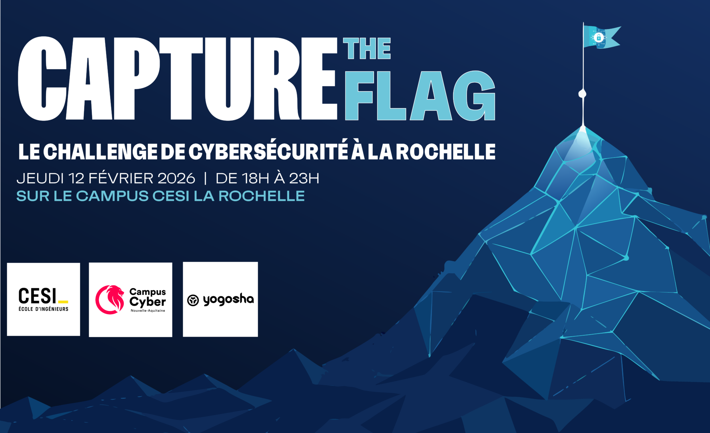

Stage 1 - Site web entreprise
Petit site vitrine réalisé avec Wordpress. Fonctionnalités : Agenda google connecté via API uniquement accéssible par l'utilisateur authentifié.
Voici quelques-uns de mes travaux. Cliquez pour voir plus de détails.
Petit site vitrine réalisé avec Wordpress. Fonctionnalités : Agenda google connecté via API uniquement accéssible par l'utilisateur authentifié.

Hackathon de 48h dédié à l'IA appliquée à l'aéronautique. Travail en équipe de 4 avec méthode agile, de l'idéation au prototype et au pitch final.

Participation à un CTF organisé par CESI, Yogosha et Campus Cyber 17 sur le campus CESI de La Rochelle (18h–23h). Challenges réalisés en équipe : cryptographie, stéganographie, web, reverse et réseaux.